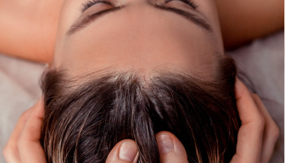
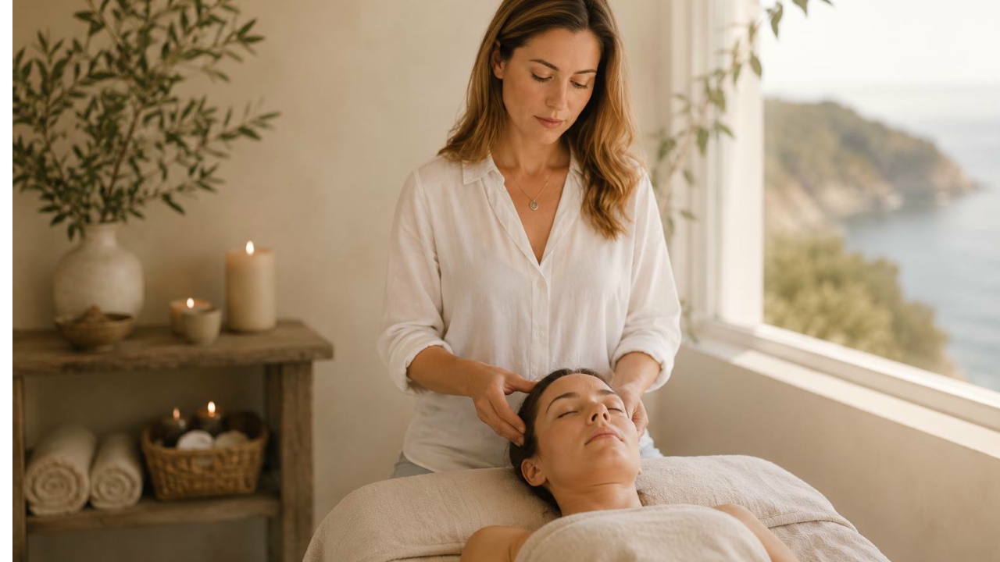
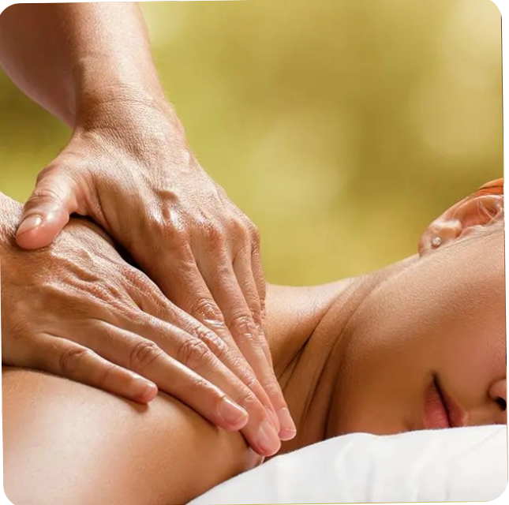
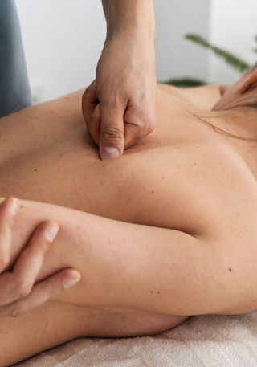
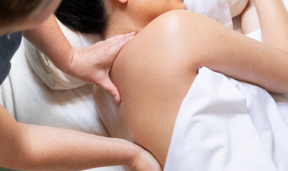
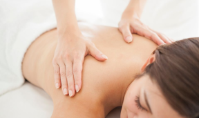
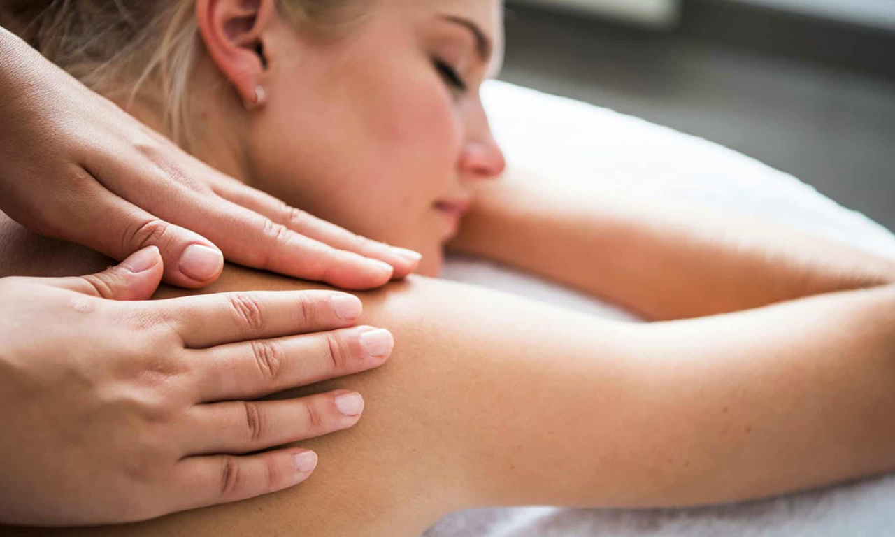

Омоложение
Процедуры, которые стирают следы усталости и времени
Точная работа с кожей и мышцами лица.

Я специалист по омоложению и мастер массажа. Мой подход сочетает точные техники с глубоким пониманием тела, чтобы вернуть вам естественную свежесть и силу.

Выберите направление, которое подходит именно вам
Точная работа с кожей и мышцами лица.

Техники, снимающие напряжение и возвращающие подвижность

Сочетание процедур для максимального эффекта

Каждое тело уникально. Я подбираю методики под ваши задачи, а не работаю по шаблону.

Перед началом работы я оцениваю состояние кожи, мышц и общее самочувствие. Программа строится на этом, а не на общих рекомендациях.
Популярные техники, которые дают видимый результат уже после первых сеансов.
Мягкие, но точные движения запускают естественный отток лимфы. Кожа становится ровнее, черты лица — чётче.

Глубокая проработка мышц подтягивает овал и разглаживает заломы. Эффект сравнимым с полноценной тренировкой для лица.

Комплекс процедур, направленный на замедление возрастных изменений. Кожа получает стимул к обновлению и восстановлению.

Что говорят те, кто уже почувствовал перемены.
После одного сеанса двухчасового фасциального массажа заметно поправилась осанка, плечи и тазовые кости встали на одном горизонтальном уровне, мне стало легче двигаться, заниматься спортом. Прошли дискомфорт и стянутость в зоне шеи и лопаток. Для меня теперь этот массаж как обязательный пункт в моей жизни.
Моё лицо светилось и сияло после массажа! Я смотрю на себя в зеркало и на фото, мне очень нравится результат! Как будто после месяца в отпуске! Ушло напряжение, появилась гладкость и напитанность кожи. Близкие и друзья спрашивают что ты сделала? Эффект настолько очевиден!
“Я актриса и работа с голосом для меня очень важна. Каково было моё удивление, когда после пары сеансов массажа моя диафрагма раскрылась и голос зазвучал глубже и мощнее. Теперь я получаю ещё большее удовольствие от процесса пения. А состояние лёгкости в теле и мыслях после массажа просто не передать словами! Считаю, что это качественно меняет жизнь!”
Простые ответы на то, что спрашивают перед первым визитом.
Фасциальный массаж — это бережная работа с соединительной тканью, которая помогает уменьшить ощущение скованности и вернуть телу больше свободы и подвижности.
После фасциальной работы изменения ощущений и подвижности могут продолжаться некоторое время после сеанса. Организму нужно время, чтобы адаптироваться к новому распределению напряжения и движению. Поэтому мы оцениваем результат не только сразу после массажа, но и в последующие 24–48 часов.
Обычно я рекомендую начать с курса из 4–6 процедур, а затем оценить результат. После первого сеанса мы смотрим на реакцию тела, после нескольких — насколько изменения становятся более стабильными. Универсального количества сеансов нет: оно зависит от исходного состояния, образа жизни и того, какую задачу мы решаем.
Да, при некоторых состояниях кожи и сосудов процедуры не проводятся. Перед записью я задам несколько вопросов о здоровье. Это защищает вас и результат.
Напишите мне, отвечу лично и без спешки.
Запишитесь на консультацию или выберите процедуру. Первый шаг к свежести и расслаблению проще, чем кажется.
